CM5235 · APPLIED COMPUTATIONAL CHEMISTRY
总汇总 第 1–6 讲
精简版：每讲 = 必背公式表 + 关键讲义原图（每图一句话）。看不懂的地方点"详解"跳到完整讲义对应页。
第 1 讲 课程概览与计算平台
详解：L01 完整讲义
| 必背 | 一句话 |
|---|---|
| 考试形式 | 期中 15%、期末 25%，只考理论/概念，不考计算；四次作业各 15% |
| 四个软件 | Gaussian 常规有机 · ORCA 光谱/磁性 · OpenMOLCAS 多组态 · VASP 固体 |
| 延迟 vs 带宽 | 延迟 = 第一字节多久到；带宽 = 之后多快到。RAM 100 周期，跨节点 10⁴ 周期 |
| 为什么双精度 | 总能量 ~10³ Hartree，要分辨 10⁻³，单精度 7 位全被吃光 |
| 矩阵分解 | O(n³)，内存不省、难并行 → SCF 每轮对角化是瓶颈 |
| Amdahl | Smax = 1/(1−p)，95% 可并行最多快 20 倍 |
| 摩尔定律的残酷 | 算力翻倍，CCSD(T) 能算的体系只大 10%——进步靠算法 |
| 集群三原则 | 别在登录节点跑；用 scratch；%NProcShared=ncpus、%Mem<mem |
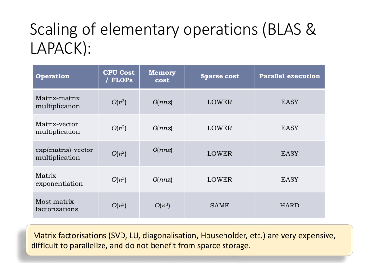
第 2 讲 量子力学基础与 Hartree–Fock 理论
详解：L02 完整讲义
| 必背 | 一句话 |
|---|---|
| 何时需要量子力学 | ΔE ≫ kBT（室温 ≈ 2.5 kJ/mol）；电子跃迁是 100–400 kBT |
| Ĥψ = Eψ | 本征值方程；量子化来自边界条件 |
| [x̂, p̂] = iħ | 不对易 → 不能同时确定 → 不确定性原理 |
| 厄米 | 本征值必为实 → 可观测量的算符必须厄米 |
| Born 解释 | |Ψ|² 是概率密度，Ψ 本身不可观测 |
| 五大公设 | ①Ψ 描述状态 ②可观测量↔算符 ③测量值只能是本征值 ④期望值 = Σ|bn|²an ⑤含时方程 |
| 三个量子数 | [Ĥ,L̂²] = [Ĥ,L̂z] = 0（球对称）→ n, l, m；节面总数 n−1 |
| 泡利 | P̂12Ψ = −Ψ；Slater 行列式自动满足 |
| J vs K | J：经典库仑，所有电子对都有；K：纯量子，仅同自旋，降低能量 |
| Hund 规则 | E(³S) − E(¹S) = −2K：同自旋空间波函数反对称 → Fermi 空穴 |
| BO 近似 | 核不动 → 势能面的概念由此而来 |
| 闭壳层 HF 能量 | E = 2ΣHi + ΣΣ(2Jij − Kij) + VNN |
| Roothaan | FC = SCε；S 因为基函数不正交；F 依赖 C → SCF 迭代 |
| RHF vs UHF | H₂ 解离：RHF 锁 50% 离子项（高 ~140 kcal/mol）；UHF 对但自旋污染 |
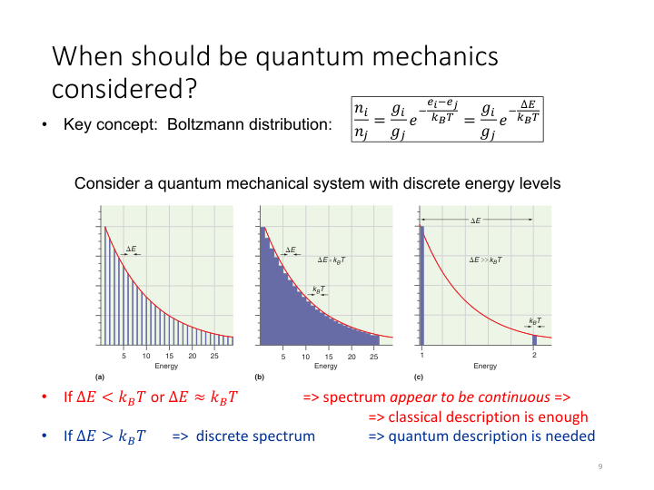
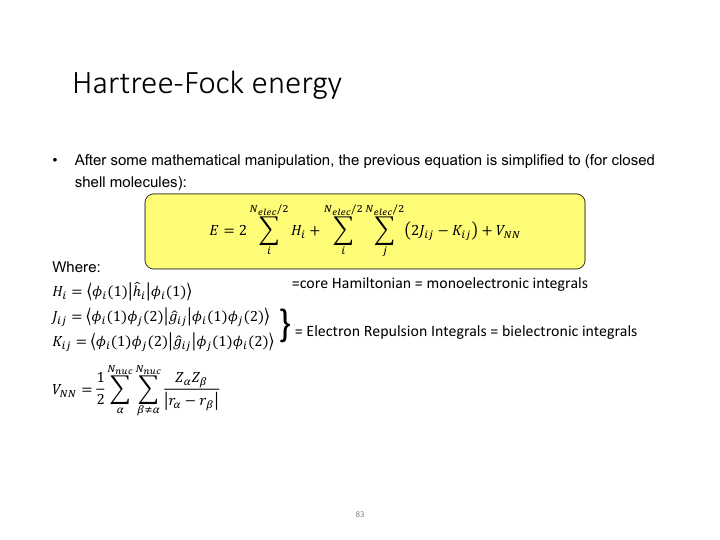
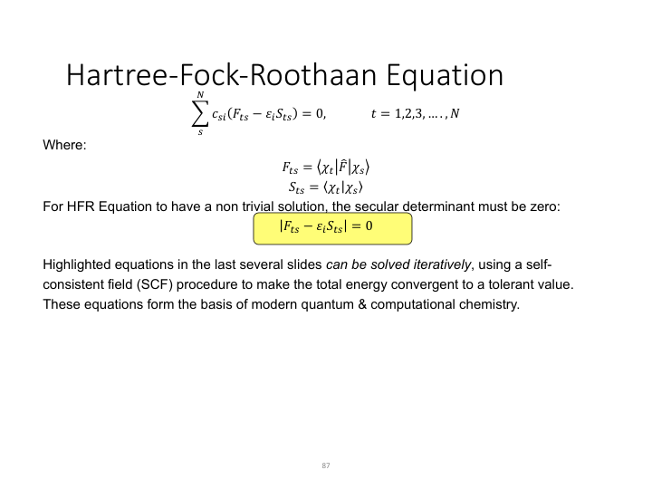
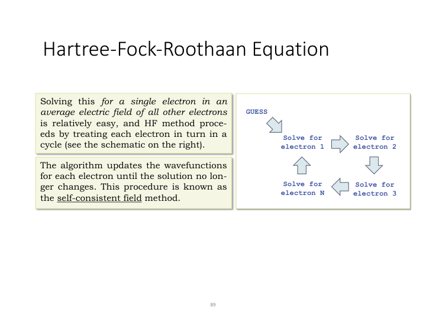
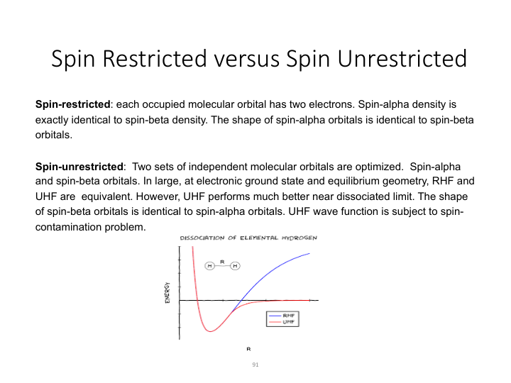
第 3 讲 软件工具、变分原理、SCF 实现与基组
详解：L03 完整讲义
| 必背 | 一句话 |
|---|---|
| 变分原理 | Etrial ≥ Eexact；只保证能量，不保证性质和能量差 |
| 变分四步 | 写 ψ(α) → 算 E(α) → dE/dα = 0 → 代回 |
| 行列式能量（动笔题） | E = Σhii + Σi<j(Jij − Kij)；两个双占据轨道之间：4J − 2K |
| Koopmans | IE ≈ −εHOMO；冻结轨道；HF 误差抵消所以准；DFT 不适用 |
| B 原子 | 2p 三重简并 → 需 3 个行列式 → 静态相关 → CASSCF |
| 自旋污染 | 看 ⟨Ŝ²⟩ vs S(S+1)：0 / 0.75 / 2.00 |
| 密度矩阵 | Dγδ = Σ占据cγjcδj；tr(DS) = N |
| 三种轨道 | 正则（F 对角）· 天然（D 对角）· 定域；能量密度全相同 |
| 双电子积分 | ~N⁴/8 个 → direct SCF 现算；RI 降到 N³ |
| 收敛技巧 | 阻尼 · 能级移动（可能卡局部极小）· DIIS（误差 FDS−SDF）· 二次收敛 |
| GTO vs STO | GTO 核处无尖点、衰减太快，但高斯乘积定理→积分解析 |
| 基组命名 | 6-311++G(3df,3pd)；aug-cc-pVnZ；极化 = l+1，弥散 = 阴离子/弱相互作用 |
| BSSE | 基函数互借 → 高估结合；Counterpoise + 幽灵原子 |
| 虚频 | 0 个 = 极小点；1 个 = 过渡态；≥2 = 重做 |
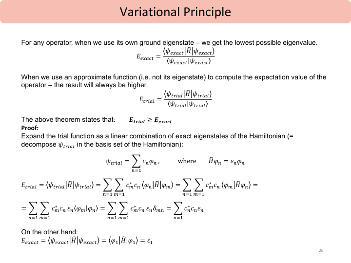
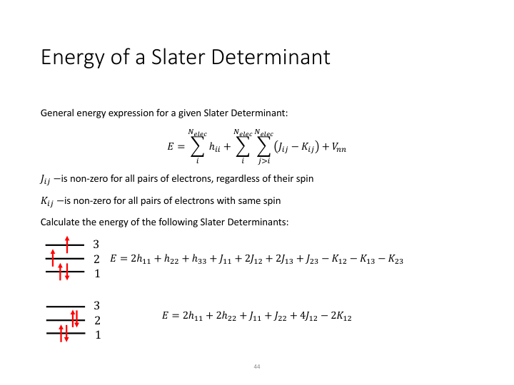
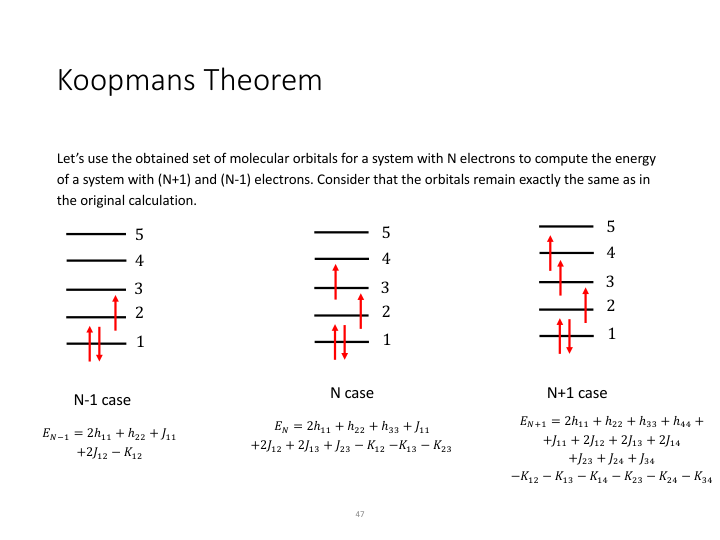
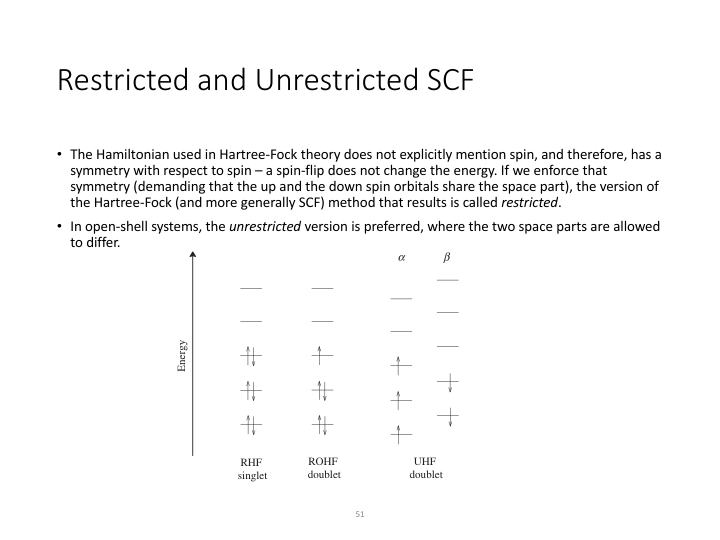
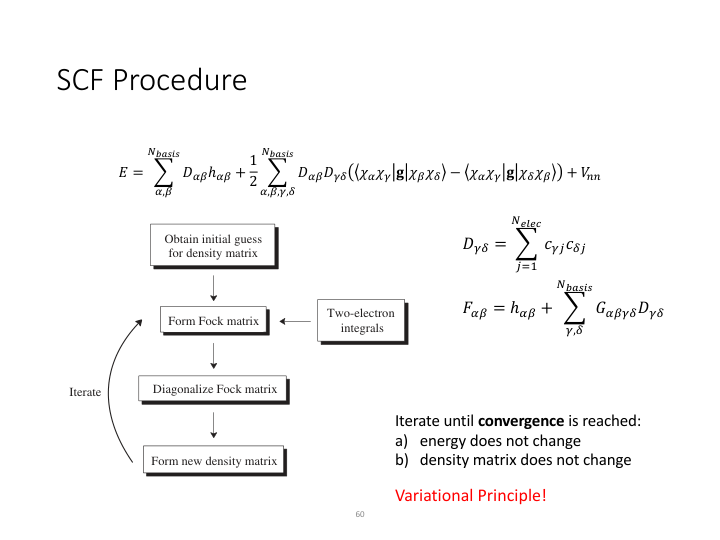
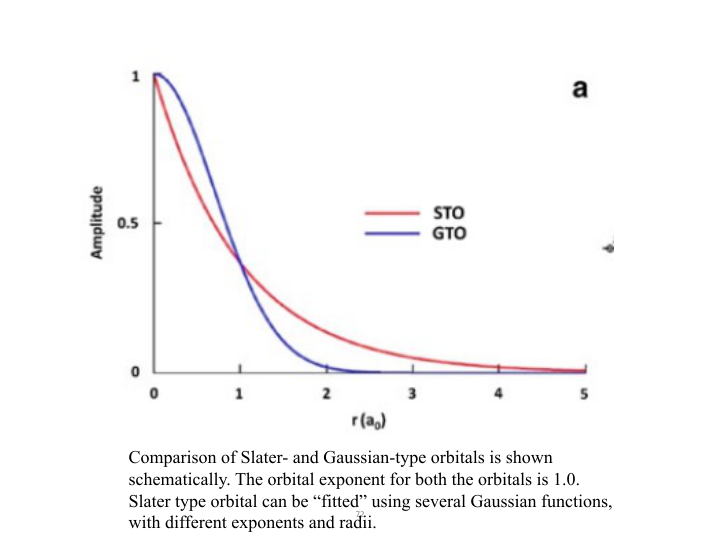
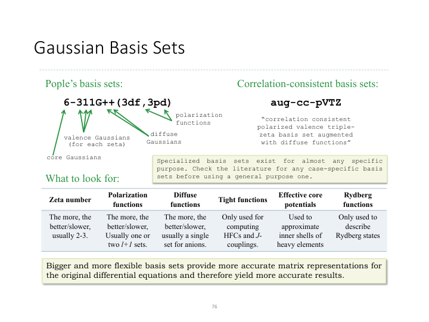
第 4 讲 电子相关方法
详解：L04 完整讲义
| 必背 | 一句话 |
|---|---|
| 相关能 | Ecorr = Eexact − EHF < 0；~1% 总能量，但与键能同量级 |
| 静态 vs 动态 | 静态：单行列式原理上不够（简并/断键）→ CASSCF；动态：瞬时躲避 → MP2/CC |
| Brillouin | ⟨ΨHF|Ĥ|Ψir⟩ = 0 → 单激发不直接混入、MP2 无单激发项 |
| Ne 权重 | 参考 0.96 · 双激发 0.034 · 单激发 0.001 → 双激发是主力 |
| CI 修 H₂ | Ψ = (a₀+a₁)[离子] + (a₀−a₁)[共价]；R→∞ 时 a₁ = −a₀ |
| 尺寸一致性 | 截断 CI ✘（缺 TATB 交叉项）；CC ✔（eTA+TB = eTAeTB） |
| CC | Ψ = eTΨ₀；½T₂² 隐含四激发；非变分；CCSD(T) 黄金标准 |
| MP2 | Σ|⟨ij||ab⟩|²/(εi+εj−εa−εb)；简并时分母→0 发散 |
| MPn 不收敛 | Be：MP7 = 100.15%，会过冲 |
| 标度 | HF N⁴ · MP2 N⁵ · CCSD N⁶ · CCSD(T) N⁷ · FCI N! |
| CBS | HF 指数收敛；相关能 A/n³ 慢收敛（电子尖点） |
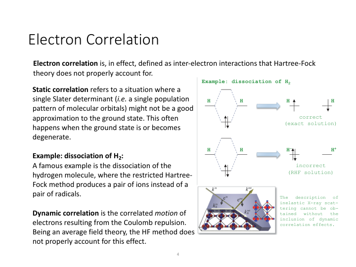
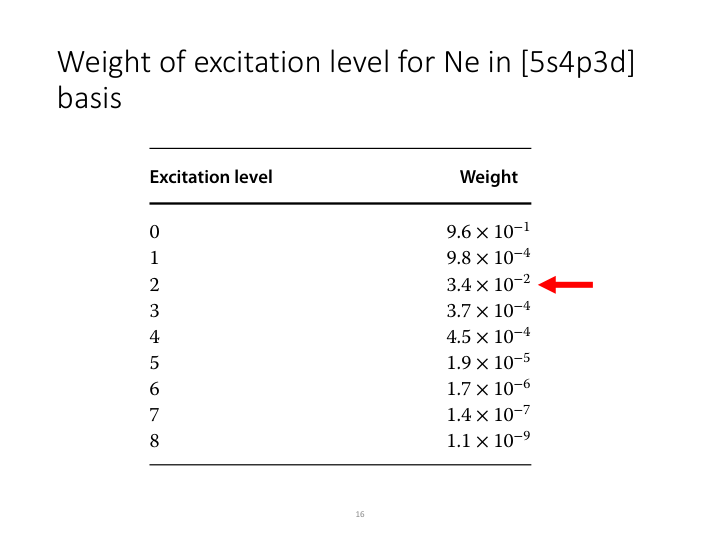
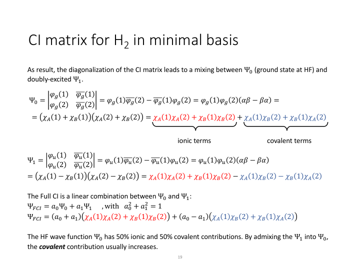
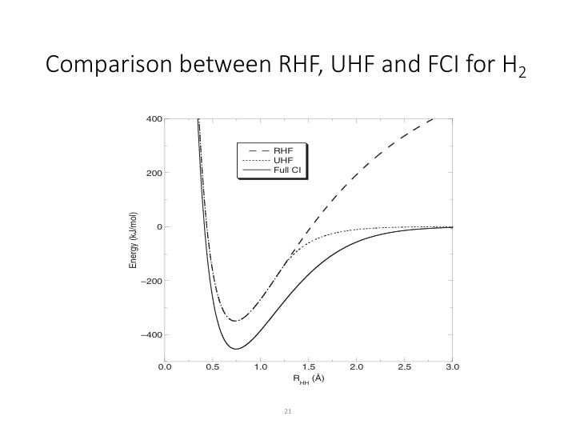
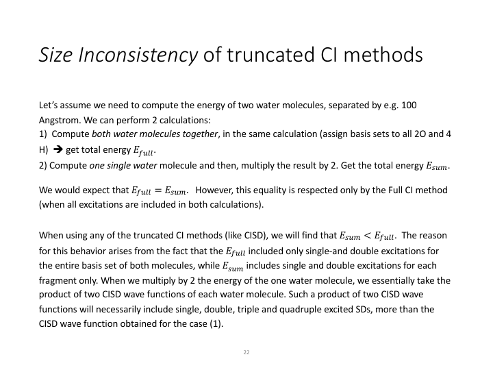
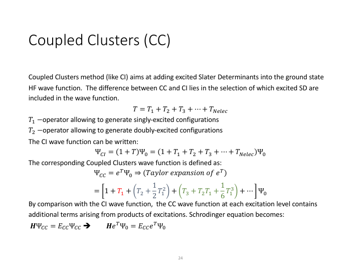
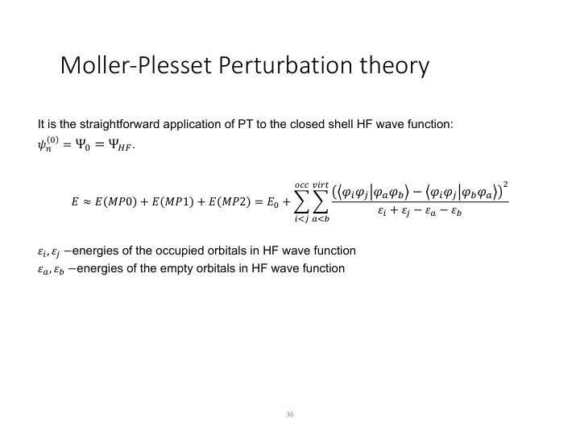
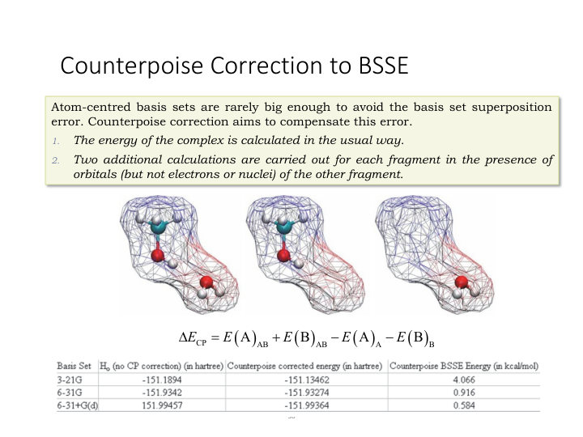
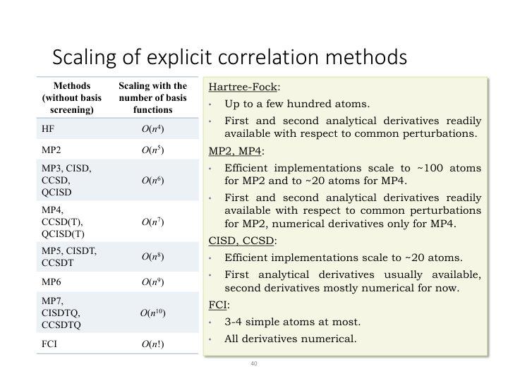
第 5 讲 密度泛函理论 (DFT)
| 必背 | 一句话 |
|---|---|
| 密度 | ρ(r) 只有 3 个变量，与 N 无关；N = ΣPμνSμν |
| 外势 | T̂、V̂ee 普适，只有 Vext 区分分子 |
| HK 第一定理 | 基态 ρ ⟺ Vext，一切性质是 ρ 的泛函（反证法证明） |
| HK 第二定理 | E[ρ] = FHK[ρ] + ∫ρVext，在 ρ₀ 处最小 |
| 泛函 | 函数 → 数；δ(∫ρν)/δρ = ν |
| Kohn–Sham | 无相互作用替身重现 ρ；[−½∇² + VH + Vext + Vxc]φ = εφ；只有 Vxc 未知 |
| HF vs KS | HF：交换精确非局域、无相关；KS：交换+相关都近似但局域 |
| Jacob 阶梯 | LDA(ρ) → GGA(∇ρ) → meta-GGA(τ) → 杂化(HF 交换) → 双杂化(MP2) |
| B3LYP | 20% HF 交换，3 个经验参数 → 严格说非 ab initio |
| SIE | HF 中 Jii=Kii 抵消；近似 DFT 抵消不净 → 过度离域、能垒低、带隙小 |
| 范围分离 | erf 拆 1/r12，长程 HF 交换 → 修 CT 激发、SIE |
| 色散 | 局域泛函看不到远处 → D3：−ΣC6/R⁶ × 阻尼 |
| 不适合 DFT | 双自由基、开壳层过渡金属、断键；镧系用 4f-in-core |
| 磁耦合 | Ĥ = −2JŜ₁·Ŝ₂ → ET = −J/2，ES = 3J/2，ΔEST = −2J |
| BS-DFT | 单重态需 2 个行列式 → 算 |αβ|；J = (EBS−EHS)/(⟨S²⟩HS−⟨S²⟩BS) |
| TD-DFT | 线性响应，极化率极点 = 激发能；绝热近似；CT/Rydberg/双激发差 |


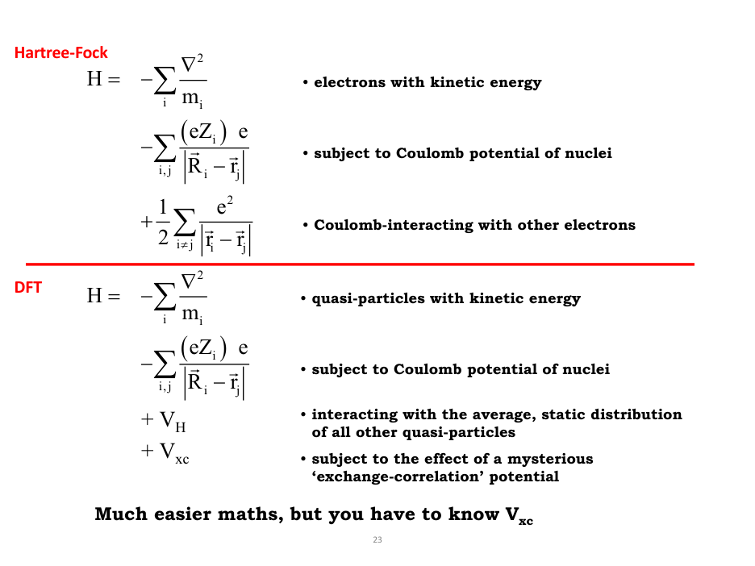
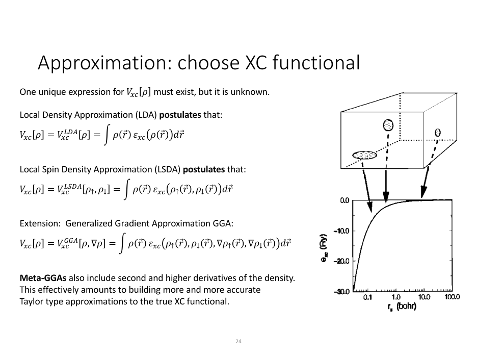

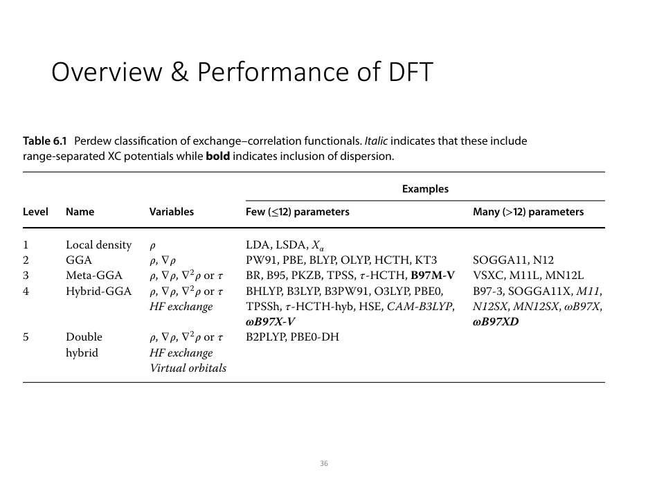
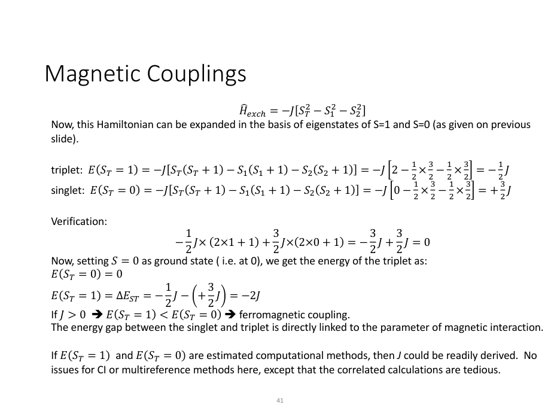

第 6 讲 波函数分析、相对论效应与溶剂化模型
| 必背 | 一句话 |
|---|---|
| Mulliken 电荷 | QA = ZA − Σμ∈A(PS)μμ：同原子全给、跨原子平分（讲义 p5 式中的 ½ 多乘了） |
| Mulliken 的毛病 | 布居 >2 或负；平分无依据；依赖基组；不重现多极矩 |
| 四种电荷 | Mulliken/Löwdin（基函数）· Bader（零通量面 ∇ρ·n=0）· Hirshfeld（自由原子密度比例） |
| 原子电荷 vs 静电势 | 电荷不是可观测量；MEP 是（红=负=富电子，蓝=正） |
| 键级 | qAB = 2ΣΣPS（重叠布居）；Mayer 键级更接近 1/2/3 |
| 轨道定域化 | 行列式幺正不变；Boys（质心远）· ER（自排斥大）· PM（原子布居集中，保 σ/π）；定域轨道没有轨道能 |
| 相对论 | 1s 速度 ≈ Z/137 c；Au γ≈1.22；s/p 收缩（直接）、d/f 扩张（间接） |
| Dirac 方程 | 时空都一阶 → 4×4 矩阵、4 分量（大/小分量）、自旋自然出现、正电子态 |
| Pauli 哈密顿量 | 质量-速度 −p⁴/8m³c² + SOC s·l + Darwin δ(r)；标量相对论 = 质量-速度 + Darwin |
| 实用相对论 | ECP（便宜）· DKH2 / ZORA / X2C（全电子，需专用基组）；1C/2C/4C |
| 溶剂模型 | 显式（氢键、贵）· 隐式 PCM（只有 ε）· 混合 |
| Born / Onsager | −(1−1/ε)q²/2R；−[(ε−1)/(2ε+1)]μ²/R³；ε>20 后饱和 |
| PCM | 原子球空穴 + 表面电荷 σ = −[(ε−1)/4πε]∂φ/∂n，与溶质自洽；ΔG = 空穴 + 色散 + 静电 |
| Poisson–Boltzmann | 含可移动离子；线性化 → Debye 屏蔽 e−κr/r |
| 色散 | 二阶微扰中两分子同时激发的项 → 需双激发 → HF/常规 DFT 为零；MP2 需 CP、会高估 π 堆积 |
| UV/Vis | Franck–Condon：垂直吸收 > 绝热 > 垂直发射；跃迁偶极为零即禁阻 |


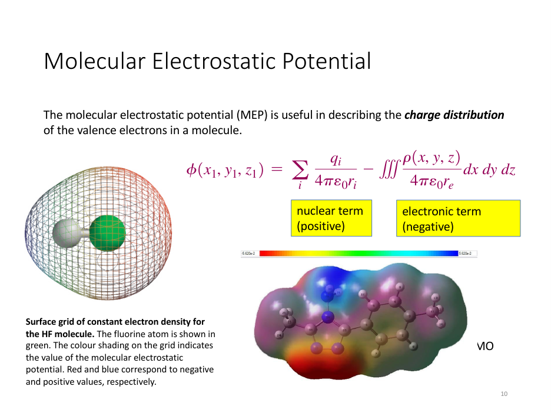
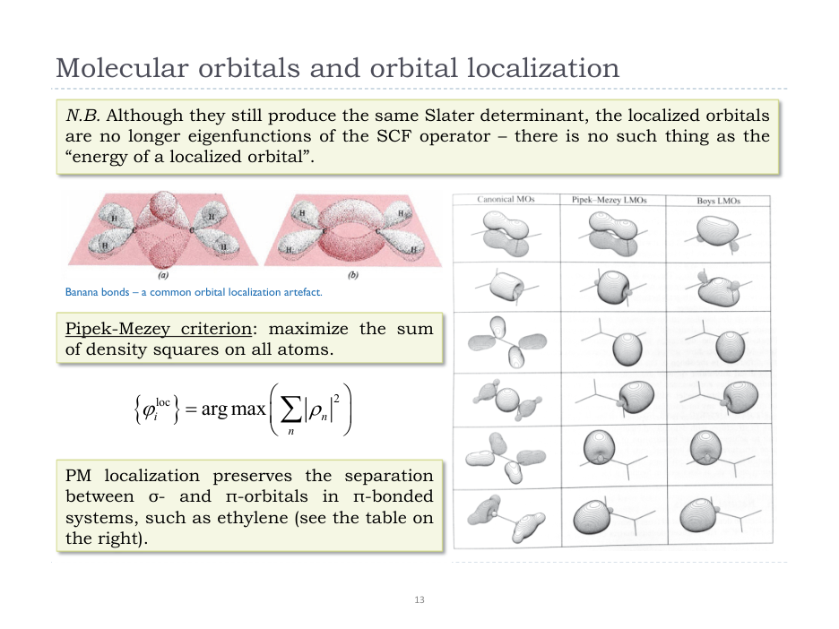


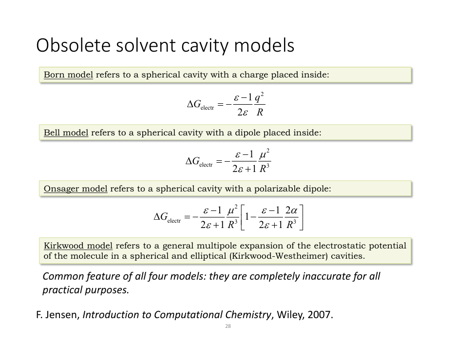

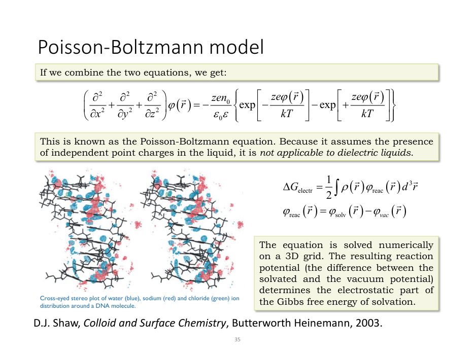
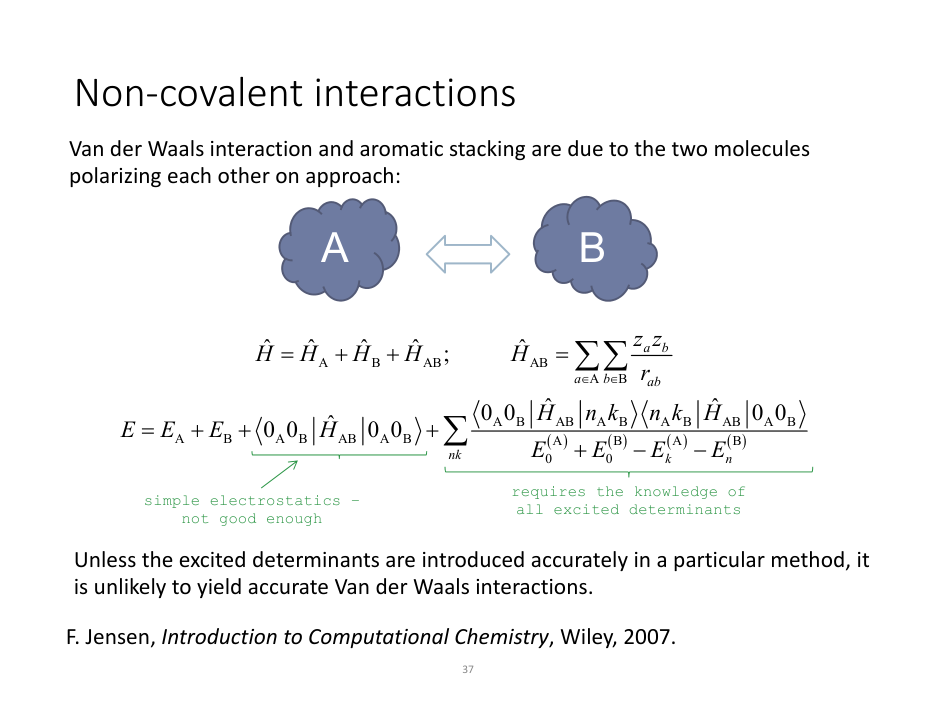